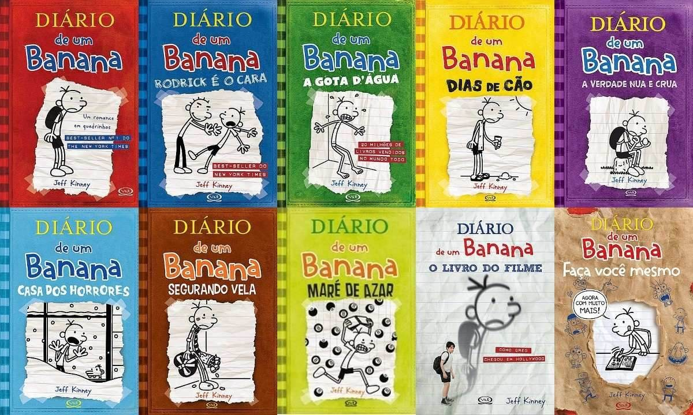

Curiosidades

Diário de um Banana (2010)
- Elenco Inicial: O filme marcou a estreia de Zachary Gordon como Greg Heffley, o personagem principal. Ele continuou a retratar Greg nos dois filmes seguintes.
- Direção Familiar: O diretor Thor Freudenthal já havia trabalhado em filmes direcionados a um público jovem, como "Hotel for Dogs" (2009).
- Animação de Jeff Kinney: Jeff Kinney, autor e ilustrador da série, aparece como o pai de um dos personagens no filme e também forneceu a voz para um personagem animado.
- Elementos Animados: Assim como nos livros, o filme incorpora elementos animados, trazendo as ilustrações de Jeff Kinney para a tela de maneira única.
- Sucesso de Bilheteria: Apesar de algumas críticas mistas, o filme foi um sucesso de bilheteria, o que levou à produção de sequências.
This is the third item's accordion body.
It is hidden by default, until the collapse plugin adds the appropriate classes
that we use to style each element. These classes control the overall appearance,
as well as the showing and hiding via CSS transitions. You can modify any of
this with custom CSS or overriding our default variables. It's also worth noting
that just about any HTML can go within the
.accordion-body
, though the transition does limit overflow.
Diário de um Banana: Rodrick é o Cara (2011)
- Foco em Rodrick: Este filme concentra-se mais na relação entre Greg e seu irmão mais velho, Rodrick, explorando os desafios e dinâmicas entre eles.
- Música de Rodrick: O ator Devon Bostick, que interpreta Rodrick, formou uma banda fictícia chamada "Löded Diper" para o filme, contribuindo com músicas para a trilha sonora.
- Cena de Queijo: Uma cena icônica envolvendo um pedaço de queijo é uma das favoritas dos fãs e foi uma adição divertida ao enredo do filme.
- Vídeo Diário de Rodrick: O filme inclui cenas de Rodrick gravando seu próprio vídeo diário, oferecendo uma perspectiva única sobre sua vida.
- Continuidade com o Livro: Embora haja algumas diferenças em relação ao livro, o filme mantém muitos elementos da história original.
This is the second item's accordion body.
It is hidden by default, until the collapse plugin adds the appropriate classes
that we use to style each element. These classes control the overall appearance,
as well as the showing and hiding via CSS transitions. You can modify any of
this with custom CSS or overriding our default variables. It's also worth noting
that just about any HTML can go within the
.accordion-body
, though the transition does limit overflow.
This is the third item's accordion body.
It is hidden by default, until the collapse plugin adds the appropriate classes
that we use to style each element. These classes control the overall appearance,
as well as the showing and hiding via CSS transitions. You can modify any of
this with custom CSS or overriding our default variables. It's also worth noting
that just about any HTML can go within the
.accordion-body
, though the transition does limit overflow.
Diário de um Banana: Dias de Cão (2012)
- Enredo de Halloween: O filme se passa durante o Halloween, adicionando uma atmosfera temática à narrativa e explorando as travessuras típicas dessa época do ano.
- Problemas com a Máquina de Ensino: O enredo envolve problemas com uma máquina de ensino, uma adição interessante que não está presente no livro.
- Participação Especial de Peyton List: A atriz Peyton List faz uma participação especial como Holly Hills, um novo interesse amoroso para Greg.
- Animais em Cena: O filme inclui algumas cenas hilárias com animais, incluindo um macaco e um porco, proporcionando momentos engraçados.
- Exploração de Temas Universais: "Dias de Cão" explora temas universais da adolescência, como amizade, aceitação e a busca pela popularidade na escola.
Diário de um Banana: Caindo na Estrada (2017)
- Novo Elenco: O filme introduziu um novo elenco principal, com Jason Drucker assumindo o papel de Greg Heffley. Ele substituiu Zachary Gordon, que interpretou Greg nos três filmes anteriores.
- Viagem de Estrada: A trama segue a família Heffley em uma viagem de estrada para participar da festa de 90 anos da avó de Greg. Durante a jornada, eles enfrentam uma série de situações engraçadas e imprevistos.
- Foco na Família: Diferentemente dos filmes anteriores, que muitas vezes se concentravam nas relações entre Greg e seu irmão Rodrick, "Caindo na Estrada" destaca mais a dinâmica familiar, incluindo os desafios enfrentados pelos pais de Greg.
- Elenco Renovado: No terceiro filme da série "Diário de um Banana", houve uma mudança no elenco principal. Jason Ian Drucker assumiu o papel de Greg Heffley, substituindo Zachary Gordon, que interpretou Greg nos dois filmes anteriores.
- Road Trip: A trama de "Caindo na Estrada" gira em torno de uma viagem em família. A família Heffley embarca em uma road trip para participar da festa de aniversário de 90 anos de Meemaw, a avó de Greg.